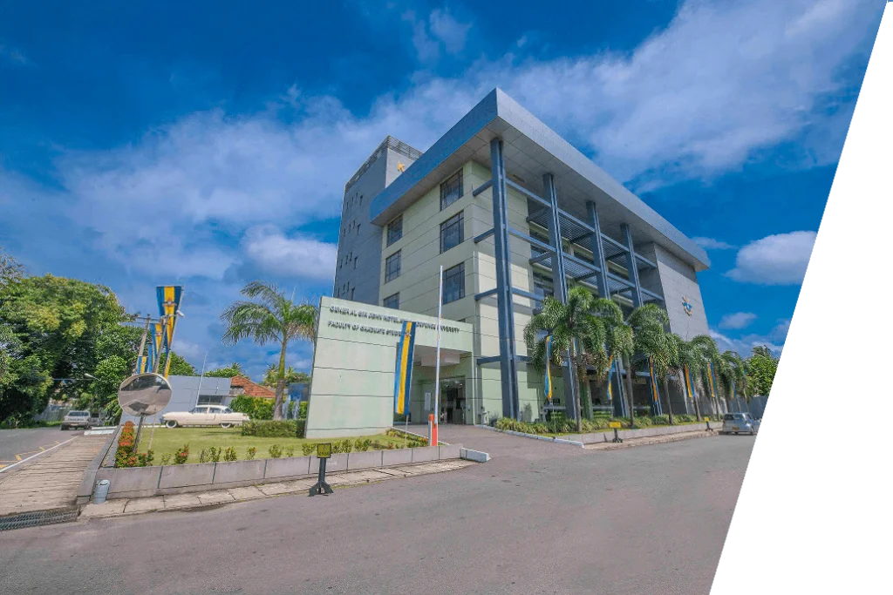

The Department of Computer Science was established on 1st January 2015 with the objective of producing CS professionals of international standard and primarily to fulfill requirements of the booming IT industry and also to develop research. As the youngest department in the faculty, it offers course modules related to scientific and theoretical aspects of computing and also introduces new course modules on emerging trends in computing with an emphasis on the developments in Artificial Intelligence. The Department of Computer Science is proud to offer two major computing programmes including BSc ( Hons) in Computer Science and BSc (Hons) in Software Engineering. These programs are targeting for physical science students from the GCE A/L. The department engages in a wide spectrum of research in broad areas of Theoretical Computing and Artificial Intelligence. This department also envisages strengthening the faculty-wide research culture.

Higher Education,
Higher Purpose
Computer science programs aim not only to educate in technical skills but also to cultivate ethical values, innovative thinking, and a commitment to addressing societal challenges through technology. This concept underscores the broader impact and social responsibility of computer science education.
How things work and inspired to make them work better. KDU is eager to know how things work and inspired to make them work better.
.png)